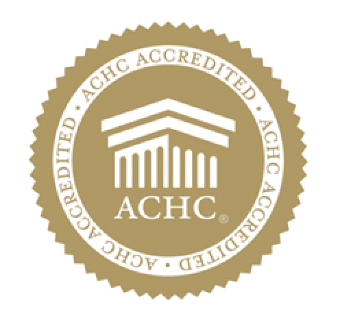

ACHC Accredited
Home health accreditation
HOME HEALTH CARE IN SOUTHERN CALIFORNIA
Expertise you can lean on.
Compassion you can feel. Right where you belong.
Caring for you at home.
Care built around your life
Connected with your physician
Support for you and your family
A LITTLE SUPPORT. A BIG DIFFERENCE.
From skilled nursing to everyday support, discover care shaped around your needs and your home.
Explore all servicesMore than a place.
A sense of belonging.
THE ORANGE APPROACH
Home is where the familiar things are. Your favorite chair. Your daily routine. The people who know you best.
Our approach brings professional support into that familiar world, with a care plan tailored to your individual needs.
ACCREDITATIONS & CREDENTIALS
Orange Home Health maintains these active accreditations, program affiliations and business credentials.
Learn about Orange Home Health
Home health accreditation
Medicare participation
Federal program oversight
Woman-Owned Small Business certification
REAL EXPERIENCES
Read what families say about their experience with Orange Home Health on Google and Yelp.
“… professional, caring and truly interested in our wellbeing. We highly recommend Orange Home Health!”
“The nurses were professional, knowledgeable, caring, and attentive.”
Describes individualized care and nurses who are professional, caring and compassionate.
Highlights attentive, professional care and reliable phone availability.
Praises punctual practitioners, thorough assessments and kind support for her father.
Reports excellent care and says switching providers was the right decision.
Recommends the responsive team for dependable and compassionate care of loved ones.
Says the team has supported her mother’s medical needs and daily routines for years.
Shares that the team protected her father’s dignity and gave the family peace of mind.
Appreciates professional staff, quick help and easy coordination with the doctor.
Calls the service reliable, professional and quick to respond.
Highlights attentive patient care, friendly staff, timely help and doctor communication.
Says two years of service have been professional, kind and caring.
ONE STEP AT A TIME
You don’t need to have every answer. That’s what a conversation is for.
Tell us what you’re looking for. We’ll discuss services, your location, and your questions.
Our team will explain the assessment process and what information may be needed.
Following an assessment, care is planned around your individual needs and requirements.
CONNECTION STARTS WITH UNDERSTANDING
It helps to talk about care in a language that feels like home. Tell us your preference, and we’ll discuss the support available to you.
Talk with our teamA LITTLE MORE CLARITY
Choosing care is personal.
We’re here to help you understand the next step.
Orange offers skilled nursing, home health aide services, physical therapy, occupational therapy, speech therapy, and medical social work. Contact our team to discuss which services may fit your needs.
Call 818-532-5353. We can discuss what you’re looking for, explain the assessment process, and help you understand the information needed for the next step.
Our office is in Van Nuys, Los Angeles. Please contact us to confirm whether home visits are available at your address and for the services you need.
Yes—please ask our team about payment, coverage, and any information needed to check your individual situation. Coverage and eligibility must be confirmed before care is arranged.
Ask about English, Spanish, Armenian, Russian, Tagalog, or Farsi. Our team will discuss current language availability with you.
FOR YOU. FOR SOMEONE YOU LOVE.
Let’s talk about what care at home could look like for your family.